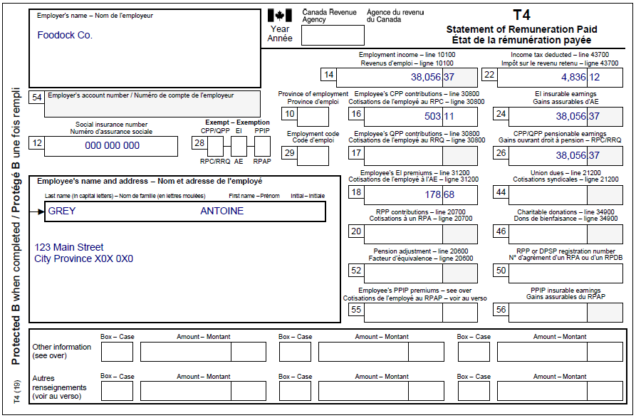
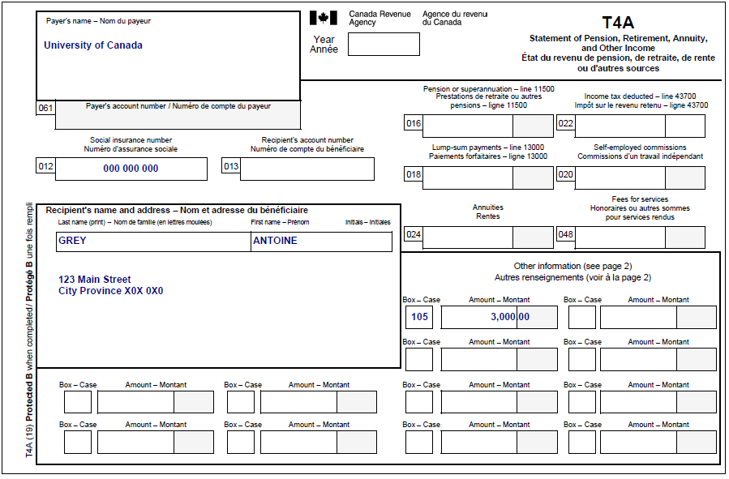
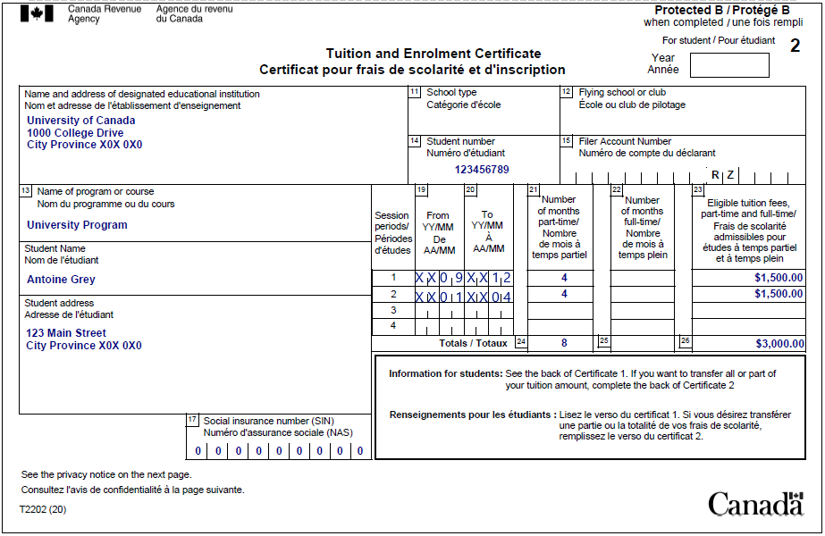
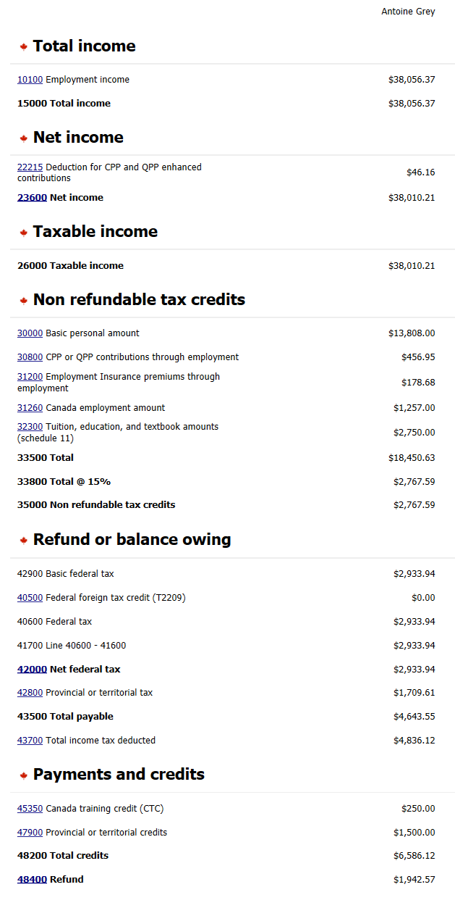
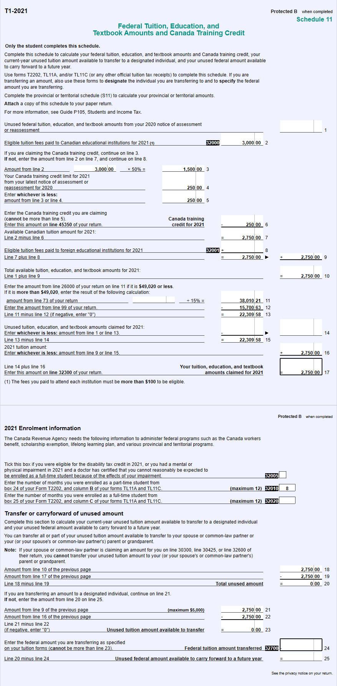

Part-time student with a scholarship
Pre-test question
Sorry, that's incorrect
The scholarship exemption for part-time students is equal to the tuition paid, plus the costs of program-related materials, plus the $500 basic scholarship exemption.
That's correct
The scholarship exemption for part-time students is equal to the tuition paid, plus the costs of program-related materials, plus the $500 basic scholarship exemption.
Instructions
- Open the UFile CVITP software
- Review the background information and slips required (tax slips, receipts, etc.)
- Enter all the necessary information into the required sections of UFile
- Once completed, compare your results with the solution provided
- Check out the takeaway points at the end
Background information
Situation
Antoine is working full time and pursuing a part-time degree at the University of Canada which granted him a scholarship. Antoine received a T2202 from the school. He does not wish to transfer his tuition fees.
Antoine’s 2021 notice of assessment (NOA) indicates that his Canada training credit limit (CTCL) for 2022 is $250. He wants to claim this amount and he does not have any unused tuition amounts from prior years. He also wishes to claim $300 on program-related material he paid for during his part-time degree.
Identification information
| Name | Pierre Knowlton |
|---|---|
| Social insurance number (SIN) | 000 000 000 |
| Address | 123 Main Street City, Province X0X 0X0 |
| Date of birth | August 17, 1980 |
| Marital status | Single |
Slips required
T4 – Statement of Remuneration Paid (Foodock Co.)
Text version
T4 – Statement of Remuneration Paid
Protected B Employer's name: Foodock Co.
Employee's name and address:
Last name: Grey
First name: Antoine
123 Main Street
City Province X0X 0X0
Box 12: Social insurance number: 000 000 000
Box 14: Employment income – line 10100: 38,056.37
Box 16: Employee's CPP contributions – line 30800: 503.11
Box 18: Employee's EI premiums – line 31200: 178.68
Box 22: Income tax deducted – line 43700: 4,836.12
Box 24: EI insurable earnings: 38,056.37
T4A – Statement of Pension, Retirement, Annuity, and Other Income ( University of Canada Scholarship)
Text version
T4A – Statement of Pension, Retirement, Annuity, and Other Income
Protected B
Payer's name: University of Canada
Recipient's name and address:
Last name: Grey
First name: Antoine
123 Main Street
City Province X0X 0X0
Box 012: Social insurance number: 000 000 000
Box 105: 3,000.00
T2202-Tuition and Enrolment Certificate – University Program
Text version
Tuition and Enrolment Certificate
Protected B
Name and address of designated educational institution:
University of Canada
1000 College Drive
City Province X0X 0X0
Student number: 123456789
Name of program or course: University Program
Student Name: Antoine Grey
Student address:
123 Main Street
City Province X0X 0X0
Session periods
Session 1
Box 19: From YY/MM: XX/09
Box 20: To YY/MM : XX/12
Box 21: Number of months part-time: 4
Box 22: Number of months full-time:
Box 23: Eligible tuition fees, part-time and full-time: $1,500.00
Session 2
Box 19: From YY/MM: XX/01
Box 20: To YY/MM : XX/04
Box 21: Number of months part-time: 4
Box 22: Number of months full-time:
Box 23: Eligible tuition fees, part-time and full-time: $1,500.00
Totals
Box 24: 8
Box 25:
Box 26: $3,000.00
Review your results
Text version
Antoine Grey
Total income
10100 Employment income: $38,056.37
15000 Total income: $38,056.37
Net income
22215 Deduction for CPP and QPP enhanced contributions: $46.16
23600 Net income: $38,010.21
Taxable income
26000 Taxable income: $38,010.21
Non refundable tax credits
30000 Basic personal amount: $13,808.00
30800 CPP or QPP contributions through employment: $456.95
31200 Employment Insurance premiums through employment: $178.68
31260 Canada employment amount: $1,257.00
32300 Tuition, education, and textbook amounts (Schedule 11): $2,750.00
33500 Total: $18,450.63
33800 Total @ 15%: $2,767.59
35000 Nonrefundable tax credits: $2,767.59
Refund or balance owing
42900 Basic federal tax: $2,933.94
40500 Federal foreign tax credit (T2209): $0.00
40600 Federal tax: $2,933.94
41700 Line 40600-41600: $2,933.94
42000 Net federal tax: $2,933.94
42800 Provincial or territorial tax: $1,709.61
43500 Total payable: $4,643.55
43700 Total income tax deducted: $4,836.12
Payments and credits
45350 Canada training credit: $250.00
47900 Provincial or territorial credits: $1,500.00
48200 Total credits: $6,586.12
48400 Refund: $1,942.57
Schedule 11, Federal Tuition, Education, and Textbook Amounts
Text version
Protected B
Schedule 11
Federal Tuition, Education, and Textbook Amounts and Canada Training Credit
Line 1: Unused federal tuition, education, and textbook amounts from your 2020 notice of assessment or reassessment: nil
Line 2: Eligible tuition fees paid to Canadian educational institutions for 2021: 3,000.00
If you are claiming the Canada training credit, continue on line 3. If not, enter the amount from line 2 on line 7, and continue on line 8.
Line 3: Amount from line 2: 3,000.00 multiplied by 50%: 1,500.00
Line 4: Your Canada training credit limit for 2021 from your latest notice of assessment or reassessment for 2020: 250.00
Line 5: Enter whichever is less: amount from line 3 or line 4: 250.00
Line 6: Enter the Canada training credit you are claiming (cannot be more than line 5). Enter this amount on line 45350 of your return. Canada training credit for 2021: 250.00
Line 7: Available Canadian tuition amount for 2021: Line 2 minus line 6: 2,750.00
Line 8: Eligible tuition fees paid to foreign educational institutions for 2021: nil
Line 9: Line 7 plus line 8: 2,750.00
Line 10: Total available tuition, education, and textbook amounts for 2021: Line 1 plus line 9: 2,750.00
Enter the amount from line 26000 of your return on line 11 if it is $49,020 or less. If it is more than $49,020, enter the result of the following calculation:
Line 11: amount from line 73 of your return divided by 15%: 38,010.21
Line 12: Enter the amount from line 99 of your return: 15,700.63
Line 13: Line 11 minus line 12 (if negative, enter “0”): 22,309.58
Unused tuition, education, and textbook amounts claimed for 2021:
Line 14: Enter whichever is less: amount from line 1 or line 13: nil
Line 15: Line 13 minus line 14: 22,309.58
2021 tuition amount:
Line 16: Enter whichever is less: the amount from line 9 or line 15: 2,750.00
Line 17: Line 14 plus line 16. Enter this amount on line 32300 of your return. Your tuition, education, and textbook amounts claimed for 2021: 2,750.00
2021 Enrolment information
Box 32010: Enter the number of months you were enrolled as a part-time student from box 24 of your Form T2202, and column B of your forms TL11A and TL11C: 8
Transfer or carryforward of unused amount
Complete this section to calculate your current-year unused tuition amount available to transfer to a designated individual and your unused federal amount available to carry forward to a future year.
Line 18: Amount from line 10 of the previous page: 2,750.00
Line 19: Amount from line 17 of the previous page: 2,750.00
Line 20: Line 18 minus line 19: Total unused amount: 0.00
If you are transferring an amount to a designated individual, continue on line 21. If not, enter the amount from line 20 on line 25.
Line 21: Amount from line 9 of the previous page (maximum $5,000): 2,750.00
Line 22: Amount from line 16 of the previous page: 2,750.00
Line 23: Line 21 minus line 22 (if negative, enter “0”): Unused tuition amount available to transfer: 0.00
Line 24: Enter the federal amount you are transferring as specified on your tuition forms (cannot be more than line 23). Federal tuition amount transferred: nil
Line 25: Line 20 minus line 24: Unused federal amount available to carry forward to a future year: nil
Takeaway points
Steps to follow
- Review their background information and the required slips
- From the Interview setup, check the box next to Employment income and employment insurance benefits (T4, T4E/RL-6) in the Employment and other benefits section. Also, check the boxes next to Pension income, other income and split pension income, COVID-19 benefits (T4A, T4A(OAS), T4A(P), T4A-RCA, T4RSP, T4RIF, T1032) in the Pension section and Student, education, textbooks, student loans, and Canada training credit in the Student section
- Select T4 and employment income from the left side menu, add the T4 slip and enter the information from Antoine’s T4 slip into the system
- Select T4A and pension income in the left side menu and click the + sign next to T4A – Pension, retirement, annuity, and other income (COVID-19 benefits), then select [105] Scholarships, bursaries, fellowship from the drop-down menu under OTHER INFORMATION (COVID-19 benefits) and in the amount field next to it, enter the amount from Antoine’s T4A slip
- Click Tuition, education, student loans in the left side menu and click the + sign next to T2202 Tuition and enrolment certificate* (TL11A and TL11C)(line 32300)
- In the Current year tuition amount section, enter the amounts from Antoine’s T2202 – Enrolment and tuition certificate into the software
- Click Tuition, education, student loans in the left side menu and click the + sign next to Part-time program details if you received scholarship, fellowship, and bursary income to be included at line 13010
- Add the amount paid for tuition shown on the T2202 and the cost of materials, then enter the result in Tuition fees and costs of part-time education program-related material paid for current year
- Click Tuition, education, student loans in the left side menu and click the + sign next to Canada training credit (CTC). Enter the CTCL amount from Antoine’s 2021 NOA into the field Canada training credit limit (CTCL) for 2021. Select Yes to answer the question Do you want to claim the Canada training credit in the current year?
- Leave the field Enter the Canada training credit you are claiming blank
Since Antoine is a part-time student, his scholarship exemption is equal to the tuition fees he paid ($3,000), plus the costs of program-related materials ($300), plus the $500 basic scholarship exemption, for a total of $3,800. Since the amount of this calculation is greater than the scholarship he received (3,000), there is no amount reported on line 13010. The amount of tuition fees that Antoine can claim on line 32300 is reduced by the amount of the Canada training credit (CTC) he is claiming this year. The $250 CTC amount is reported on line 45350 of his return.